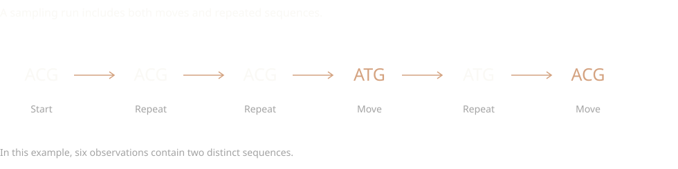

Following the samples
We need the sampler to keep exploring.
After checking the target distribution, we ask how much new information the sampler produces.

Repeated sequences belong in the trace, but long repeats give us less new information.
We therefore measure exploration and uncertainty alongside the time each run takes.